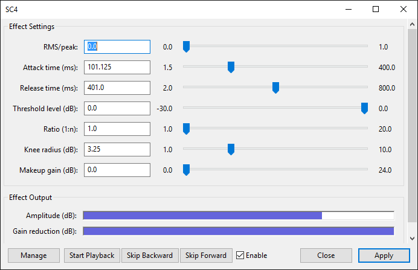

SC4
From Audacity Development Manual
SC4 is a stereo compressor with a variable envelope follower for RMS / peak behavior. Unlike the built-in Compressor, SC4 does not "look-ahead" in order to begin reducing volume before a peak occurs.
- Accessed by:
- 
- On Mac, SC4 has to be enabled at Add / Remove Plug-ins....
- On GNU/Linux, SC4 is not installed by default. If SC4 is not available in your copy of Audacity, you can obtain SC4 in the LADSPA-swh plugins set and then install it.
Effect Settings
RMS/peak
The balance between the RMS and peak envelope followers. The followers use the amplitude variation information in the waveform to affect the gain applied by the compressor. The RMS follower is generally better for subtle, musical compression and the peak follower is better for heavier, fast compression and percussion.
Attack time (ms)
How soon the compressor starts to compress the dynamics after the threshold is exceeded, in milliseconds.
Release time (ms)
How soon the compressor starts to release the volume level back to normal after the level drops below the threshold, in milliseconds.
Threshold level (dB)
The level at which the compressor will start to apply.
Ratio (1:n)
The gain reduction ratio used when the signal level exceeds the threshold level. Higher ratios reduce the gain more.
You must move this control from the default ratio of 1:1 for the effect to apply.
Knee radius (dB)
The distance from the threshold where the knee curve starts.
Makeup gain (dB)
The amount of gain added to the processed result.
Effect Output
Amplitude (dB)
After applying the effect, this displays what was the original RMS (dB) level of the selection before compression.
Gain reduction (dB)
Displays the degree of gain reduction that the effect applied to the original selection, in dB.
Real-time preview
This effect supports Real-time preview - effect settings can be changed while playing and listening to the result in real-time. Text-based button controls are provided as in the image above. The Enable checkbox acts like a live "Bypass" control. Uncheck the checkbox  Enable to hear the audio without the effect applied, and recheck the box
Enable to hear the audio without the effect applied, and recheck the box  Enable to hear the effect applied at its current settings.
Enable to hear the effect applied at its current settings.
The button accesses choices to add, delete, import or export presets for this effect and to set options for this effect. For details see Manage presets.